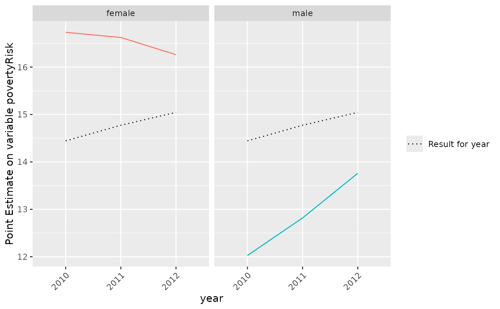
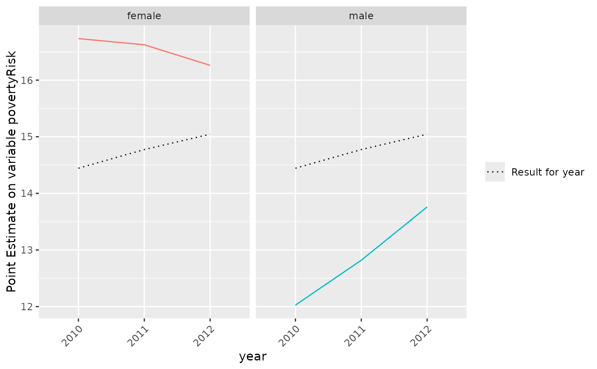

Plot results of calc.stError()
Arguments
- x
object of class 'surveysd' output of function calc.stError
- variable
Name of the variable for which standard errors have been calcualated in
dat- type
can bei either
"summary"or"grouping", default value is"summary". For"summary"a barplot is created giving an overview of the number of estimates having the flagsmallGroup,cvHigh, both or none of them. For 'grouping' results for point estimate and standard error are plotted for pre defined groups.- groups
If
type='grouping'variables must be defined by which the data is grouped. Only 2 levels are supported as of right now. If only one group is defined the higher group will be the estimate over the whole period. Results are plotted for the first argument ingroupsas well as for the combination ofgroups[1]andgroups[2].- sd.type
can bei either
'ribbon'or'dot'and is only used iftype='grouping'. Default is"dot"Forsd.type='dot'point estimates are plotted and flagged if the corresponding standard error and/or the standard error using the mean over k-periods exceeded the valuecv.limit(see calc.stError). Forsd.type='ribbon'the point estimates including ribbons, defined by point estimate +- estimated standard error are plotted. The calculated standard errors using the mean over k periods are plotted using less transparency. Results for the higher level (~groups[1]) are coloured grey.- ...
additional arguments supplied to plot.
Examples
library(surveysd)
set.seed(1234)
eusilc <- demo.eusilc(n = 3, prettyNames = TRUE)
dat_boot <- draw.bootstrap(eusilc, REP = 3, hid = "hid", weights = "pWeight",
strata = "region", period = "year")
# calibrate weight for bootstrap replicates
dat_boot_calib <- recalib(dat_boot, conP.var = "gender", conH.var = "region")
#> Iteration stopped after 2 steps
#> Convergence reached
#> 10:Not yet converged for P-Constraint1
#> 10:Not yet converged for H-Constraint1
#> 20:Not yet converged for P-Constraint1
#> 20:Not yet converged for H-Constraint1
#> 30:Not yet converged for P-Constraint1
#> 30:Not yet converged for H-Constraint1
#> 40:Not yet converged for P-Constraint1
#> 40:Not yet converged for H-Constraint1
#> 50:Not yet converged for P-Constraint1
#> 50:Not yet converged for H-Constraint1
#> 60:Not yet converged for P-Constraint1
#> 60:Not yet converged for H-Constraint1
#> 70:Not yet converged for P-Constraint1
#> 70:Not yet converged for H-Constraint1
#> 80:Not yet converged for P-Constraint1
#> 80:Not yet converged for H-Constraint1
#> 90:Not yet converged for P-Constraint1
#> 90:Not yet converged for H-Constraint1
#> 100:Not yet converged for P-Constraint1
#> year gender maxFac N epsP CalibMargin PopMargin
#> <fctr> <fctr> <num> <int> <num> <num> <num>
#> 1: 2012 male 0.0244125 7267 0.01 4076723 3979572
#> 2: 2012 female 0.0244125 7560 0.01 4305248 4202650
#> 3: 2011 male 0.0207708 7267 0.01 4062231 3979572
#> 4: 2011 female 0.0207708 7560 0.01 4289943 4202650
#> -----------------------------------------
#> 100:Not yet converged for H-Constraint1
#> year region maxFac N epsH sumCalibWeight PopMargin
#> <fctr> <fctr> <num> <int> <num> <num> <num>
#> 1: 2012 Salzburg 0.02383074 924 0.02 214443.9 219679
#> 2: 2012 Upper Austria 0.02383074 2805 0.02 553498.7 567011
#> 3: 2012 Lower Austria 0.02383074 2804 0.02 631933.9 647361
#> 4: 2012 Vorarlberg 0.02383074 733 0.02 141539.7 144995
#> 5: 2012 Tyrol 0.02383074 1317 0.02 272367.8 279017
#> 6: 2012 Carinthia 0.02383074 1078 0.02 228175.7 233746
#> 7: 2012 Burgenland 0.02383074 549 0.02 107228.3 109846
#> 8: 2012 Styria 0.02383074 2295 0.02 478680.2 490366
#> 9: 2012 Vienna 0.02383074 2322 0.02 793746.7 813124
#> 10: 2011 Vorarlberg 0.02034815 733 0.02 142044.6 144995
#> 11: 2011 Upper Austria 0.02034815 2805 0.02 555473.4 567011
#> 12: 2011 Tyrol 0.02034815 1317 0.02 273339.5 279017
#> 13: 2011 Salzburg 0.02034815 924 0.02 215208.9 219679
#> 14: 2011 Styria 0.02034815 2295 0.02 480388.0 490366
#> 15: 2011 Lower Austria 0.02034815 2804 0.02 634188.4 647361
#> 16: 2011 Burgenland 0.02034815 549 0.02 107610.8 109846
#> 17: 2011 Vienna 0.02034815 2322 0.02 796578.4 813124
#> 18: 2011 Carinthia 0.02034815 1078 0.02 228989.7 233746
#> -----------------------------------------
#> 110:Not yet converged for P-Constraint1
#> 110:Not yet converged for H-Constraint1
#> 120:Not yet converged for P-Constraint1
#> 120:Not yet converged for H-Constraint1
#> 130:Not yet converged for P-Constraint1
#> 130:Not yet converged for H-Constraint1
#> 140:Not yet converged for P-Constraint1
#> 140:Not yet converged for H-Constraint1
#> 150:Not yet converged for P-Constraint1
#> 150:Not yet converged for H-Constraint1
#> 160:Not yet converged for P-Constraint1
#> 160:Not yet converged for H-Constraint1
#> 170:Not yet converged for P-Constraint1
#> 170:Not yet converged for H-Constraint1
#> 180:Not yet converged for P-Constraint1
#> 180:Not yet converged for H-Constraint1
#> 190:Not yet converged for P-Constraint1
#> 190:Not yet converged for H-Constraint1
#> 200:Not yet converged for P-Constraint1
#> year gender maxFac N epsP CalibMargin PopMargin
#> <fctr> <fctr> <num> <int> <num> <num> <num>
#> 1: 2012 female 0.0244125 7560 0.01 4305248 4202650
#> 2: 2012 male 0.0244125 7267 0.01 4076723 3979572
#> 3: 2011 female 0.0207708 7560 0.01 4289943 4202650
#> 4: 2011 male 0.0207708 7267 0.01 4062231 3979572
#> -----------------------------------------
#> 200:Not yet converged for H-Constraint1
#> year region maxFac N epsH sumCalibWeight PopMargin
#> <fctr> <fctr> <num> <int> <num> <num> <num>
#> 1: 2012 Upper Austria 0.02383074 2805 0.02 553498.7 567011
#> 2: 2012 Salzburg 0.02383074 924 0.02 214443.9 219679
#> 3: 2012 Carinthia 0.02383074 1078 0.02 228175.7 233746
#> 4: 2012 Tyrol 0.02383074 1317 0.02 272367.8 279017
#> 5: 2012 Lower Austria 0.02383074 2804 0.02 631933.9 647361
#> 6: 2012 Burgenland 0.02383074 549 0.02 107228.3 109846
#> 7: 2012 Vorarlberg 0.02383074 733 0.02 141539.7 144995
#> 8: 2012 Styria 0.02383074 2295 0.02 478680.2 490366
#> 9: 2012 Vienna 0.02383074 2322 0.02 793746.7 813124
#> 10: 2011 Burgenland 0.02034815 549 0.02 107610.8 109846
#> 11: 2011 Lower Austria 0.02034815 2804 0.02 634188.4 647361
#> 12: 2011 Salzburg 0.02034815 924 0.02 215208.9 219679
#> 13: 2011 Tyrol 0.02034815 1317 0.02 273339.5 279017
#> 14: 2011 Carinthia 0.02034815 1078 0.02 228989.7 233746
#> 15: 2011 Styria 0.02034815 2295 0.02 480388.0 490366
#> 16: 2011 Vienna 0.02034815 2322 0.02 796578.4 813124
#> 17: 2011 Upper Austria 0.02034815 2805 0.02 555473.4 567011
#> 18: 2011 Vorarlberg 0.02034815 733 0.02 142044.6 144995
#> -----------------------------------------
#> Warning: Not converged in 200 steps
#> No convergence reached
#> Iteration stopped after 1 steps
#> Convergence reached
#> Calibration failed for bootstrap replicates w2
#> Corresponding bootstrap replicates will be discarded
#> Returning 2 calibrated bootstrap weights
# estimate weightedRatio for povmd60 per period
group <- list("gender", "region", c("gender", "region"))
err.est <- calc.stError(dat_boot_calib, var = "povertyRisk",
fun = weightedRatio,
group = group , period.mean = NULL)
plot(err.est)
 # plot results for gender
# dotted line is the result on the national level
plot(err.est, type = "grouping", groups = "gender")
#> Warning: No shared levels found between `names(values)` of the manual scale and the
#> data's shape values.

# plot results for rb090 in each db040
# with standard errors as ribbons
plot(err.est, type = "grouping", groups = c("gender", "region"), sd.type = "ribbon")
# plot results for gender
# dotted line is the result on the national level
plot(err.est, type = "grouping", groups = "gender")
#> Warning: No shared levels found between `names(values)` of the manual scale and the
#> data's shape values.

# plot results for rb090 in each db040
# with standard errors as ribbons
plot(err.est, type = "grouping", groups = c("gender", "region"), sd.type = "ribbon")